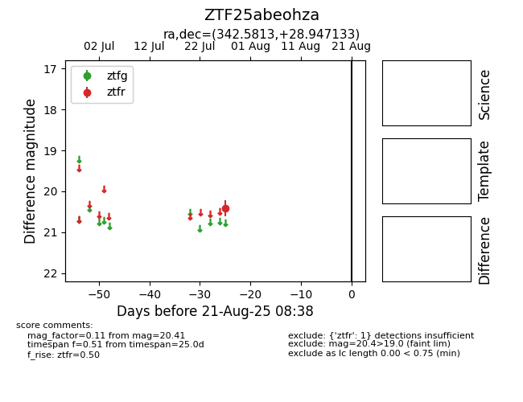

Target ZTF25abeohza at 2025-08-21 08:38, see:
FINK: fink-portal.org/ZTF25abeohza
Lasair: lasair-ztf.lsst.ac.uk/objects/ZTF25abeohza
ALeRCE: alerce.online/object/ZTF25abeohza
alt names
ZTF25abeohza (ztf,alerce)
coordinates:
equatorial (ra, dec) = (342.5813,+28.94713)
galactic (l, b) = (93.2899,-26.86331)
photometry
last ztfr=20.41
1 ztfr detections
